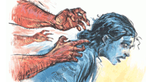

Search for ‘Hercules’ leads to govt vehicle
Ahmed Zayeef . Dhaka

Law enforcement agencies have not been able to identify ‘Hercules’—a so-called vigilante who took it upon himself to punish alleged rapists by killing them. Upon medical test, doctors found no signs of rape on the victim’s body, according to their report submitted before the court.
Meanwhile, our investigation revealed that before they were killed, two suspects in the rape case, Kabith Islam and Ishtiaq Ahmed, had been abducted from Savar and Sitakunda, respectively. According to the eyewitnesses, the captors of both the suspects identified themselves as “law enforcement officials.” However, no law enforcement agencies said they had detained or arrested any of the individuals.
Prothom Alo traced the car which was used to abduct Ishtiaq Ahmed from the Sitakunda area. It is registered as a government car, belonging to the headquarters of a law enforcement agency. Signs were also found that sophisticated surveillance technologies had been deployed to locate the actual whereabouts of the targets before they were killed.
Where has this Hercules come from? How? I believe it is the responsibility of the state and the police to find out who they are
Ishtiaq was abducted while he was on a bus, en route to Chattogram from Dhaka, on 22 January. His body was recovered 240 kilometers away two days later, at Beltala village, Jhalakathi. A typed note was found to be attached around his neck, which read: “I am the rapist of [the victim’s name]. This is my punishment.”
Kabith Islam, on the other hand, was picked up from Nabinagar, Savar, on 24 January.
A week later, his dead body was recovered from 260 kilometers north of Nabinagar, at Angaria village, too, in Jhalakathi. His body also had a note affixed, in which the vigilante executioner was named “Hercules.” The mysterious case of “Hercules”—a Greek hero—led human rights groups to question the way the rape victims were executed.
“Where has this Hercules come from? How? I believe it is the responsibility of the state and the police to find out who they are,” said Kazi Reazul Huq, the Chairman of the National Human Rights Commission (NHRC), at a meeting in Dhaka on 6 February.
Then on February 8, Home Minister Asaduzzaman Khan said, "No one is above the law. Whoever is killing the alleged rapists in the name of Hercules will be brought to book.’’ When asked regarding progress in the matter, the Home Minister said they were still working on it. Details would be revealed once the investigation was complete.
As NHRC chairman Kazi Reazul Huq is abroad, Nazrul Islam is now the commission’s acting chairman. Regarding Prothom Alo’s finding, he commented, “This is a serious allegation. The state will have to investigate the matter with renewed vigor. It needs to be revealed who in the law enforcement agencies did this.”
No signs of rape found
Both Ishtiaq and Kabith, the murdered rape suspects, lived in Bhandaria, Pirojpur. They were friends. On 17 January, a case was filed with the local police in Bhandaria, accusing them of raping a madrasa student. Filed by the victim’s father, the case charged that Ishtiaq and Kabith abducted her from the street and raped her. A week after the case was filed, Ishtiaq’s dead body was recovered, and another week later, Kabith’s.
However, the medical test report into the case submitted on January 18 before the court noted, “No evidence of a recent forceful sexual contact has been found.” The father of the victim, however, refuted the conclusion by the medical team, saying that the case was filed days after the rape incident. Therefore, he said, evidence of rape could not be found.
Jannatul Maowa, among the two female doctors at Pirojpur Sadar Hospital who conducted the test, told Prothom Alo, “If an individual was raped, there should be signs of internal or external injuries [on her/his body]. We look for that. We submitted to the court what we found upon examining the body.”
Background story
Ishtiaq used to be a tower maintenance worker for a mobile phone company. He has been married for less than a year. He was supposed to take his wife home after a formal wedding ceremony next April. On the other hand, Kabith is a fifth-semester law student at a private university in Dhaka. His father worked as a lawyer's assistant in the Dhaka Judge's Court. His grandfather's house and the female madrasa student's house share the same boundary. The house of Kabith’s father is four kilometers away, and Ishtiaq's house is next to that student's. According to the case statement, the alleged rape incident happened one kilometer away from the student's house. In the case report, the female student’s father mentioned that Kabith and his daughter were probably in touch. Kabith's father, Abul Kalam Mollah, told Prothom Alo that his son went home on December 28 after the semester final exams. His university was closed till January 10. Even after the university reopened, Kabith stayed in the village, saying that many students had not yet returned to university. Ishtiaq's father, Shah Alam Jamaddar, said that Ishtiaq lived in Dhaka. On January 11, he went to Barisal to take an examination of the tax commission. After the exam, he went to his village and stayed there for a few days as he went there after a long break. The men's father said they did not know anything about the rape and said that the female student's father had a land dispute with Kabith's uncle. However, the student's father denied it.
Ishtiaq was dragged away from a bus
A day after the case was filed, on January 18, Ishtiaq moved to Dhaka from Bhandaria—to a bachelor residence in Badda. On 20 January, he visited his in-laws’ home in Tolarbagh, Mirpur, Dhaka, and stayed there for two days before departing for Chattogram, according to his wife, Shamsunnahar. While on the bus, Ishtiaq had several conversations with his wife. After seven in the evening, Shamsunnahar could no longer reach him.
While living in Badda, Ishtiaq was often visited by Nur Islam, who was lived next door. Nur Islam told Prothom Alo that a local van driver, Sabuj, took Ishtiaq to the bus station. When contacted, Sabuj said that Ishtiaq boarded a bus belonging to Ena Paribahan at 4:00 PM from Nadda, Dhaka. He talked to Ishtiaq twice while he was on the bus. The last time Sabuj talked to Ishtiaq, he said the bus was crossing Cumilla. His number was unreachable when Sabuj tried to call him again at night.
When approached, the staff at the Ena bus stoppage in Nadda said the Chattogram bound bus originally comes from the Mahakhali main stoppage half an hour beforehand. Ena Paribahan staff at the Mahakhali main stoppage showed the registration number of the bus, which left the stoppage at 3:30 PM on January 22 to Chattogram, and the identity of the bus driver and supervisor. Due to reasons of safety, their identity could not be disclosed.
When contacted, the bus supervisor said that the bus faced a security check that night when it was at Darogahat, Sitakunda. Three individuals, in a white car, carried out the search, he said. “Our bus was let go soon. However, when the bus arrived at the Barabkunda area, we again saw the white car, speedily trying to chase us and signalling us to stop. When we obeyed the signal and stopped, the three individuals emerged from the car and identified themselves as law enforcement officials.”
“The plainclothes individuals were matching all passengers with a photo on their smartphone. At one stage, they captured one passenger.” When the supervisor was shown the photo of Ishtiaq, he confirmed that it was indeed Ishtiaq.
The bus driver confirmed the supervisor’s account and provided further details. He said that when the white car was leaving the scene with the passenger, he photographed the car's registration plate with his mobile phone. The photograph showed a Pajero car, assembled by the state-run company Progoti, a vehicle usually issued to government officers.
A search of the car’s registration number against the Bangladesh Road Transport Authority’s database found that the car’s owner was a ‘Gov’t Department,’ while the address mentioned was of the headquarter of a law enforcement agency.
To further ascertain the account of the supervisor and driver, some passengers of the bus, who were on the passenger list that day, were contacted. One passenger, who identified himself as a college student in Feni, confirmed, saying that he also witnessed the bus being stopped and a passenger (Ishtiaq) being taken away in a white car.
Two microbuses for Kabith
After the rape case was filed against him, Kabith Islam moved from Bhandaria to his house at Mohammadpur, Dhaka. The next day he again moved to a friend’s place at Nabinagar, Savar. His father, Abul Kalam Mollah, acknowledged that he advised his son to stay outside the house for some time. After Kabith began to live in his friend’s place, he talked to his father every day. They last spoke at 9:50 PM on January 24. The next evening his friend called Abul Kalam Mollah to inform him that Kabith had been picked up by plainclothes men who had come in two Hiace microbuses.
When contacted, Kabith’s friend declined to talk to Prothom Alo. However, Kabith’s father spoke to him and allowed this reporter to hear the conversation by turning the phone’s speaker on. He said to Abul Kalam Mollah that he and Kabith were having a cup of tea in a tea stall near Niribiri Road Tower at Nabinagar. Suddenly, two microbuses appeared out of the blue, he said, and four individuals from the first microbus apprehended them and took them behind the microbus. The men then showed them to someone inside the second microbus and asked him/her, “Which one?” The individual inside the microbus, in response, pointed to Kabith. The microbus then took Kabith and let his friend go.
Tracking them through SMS
Abdul Kalam Mollah obtained Kabith’s phone log. The log shows that at 10:14 PM on January 24, just hours before Kabith would be abducted, four SMSs were sent to his phone from three different phone numbers in less than half an hour. The phone numbers, when tried, were found unavailable. Similarly, Ishtiaq’s phone call log revealed that the time his bus was crossing Cumilla [as reckoned by the van driver Sabuj], a series of SMSs were being sent from a particular phone number.
An official aware of criminal investigation methods said that such SMSs, which do not contain any content in their body, are sent to the target’s mobile phone to identify his precise location. While the recipient doesn’t see the SMSs, he said, the trace of the SMSs remains in the phone log. When asked whether anyone other than a law enforcement agency has such a capability to precisely locate a target, Ruhul Amin, DIG (Media) at Police Headquarters, told Prothom Alo that it is done by a government-assigned agency, from which all other intelligence and law enforcing agencies take help to do it. He also said no one except for the security forces can do it.
Sultana Kamal, an eminent human rights activist, told Prothom Alo, “It is a matter of grave concern if it turns out to be true that the law enforcement agencies abducted the two rape suspects before being killed. If the matter isn’t investigated now, questions will arise whether it was a premeditated act. If those entrusted with the task of ensuring law and order violate the law, where will we go?”
Credit Prothom Alo, Link: https://en.prothomalo.com/bangladesh/Search-for-%E2%80%98Hercules%E2%80%99-leads-to-govt-vehicle